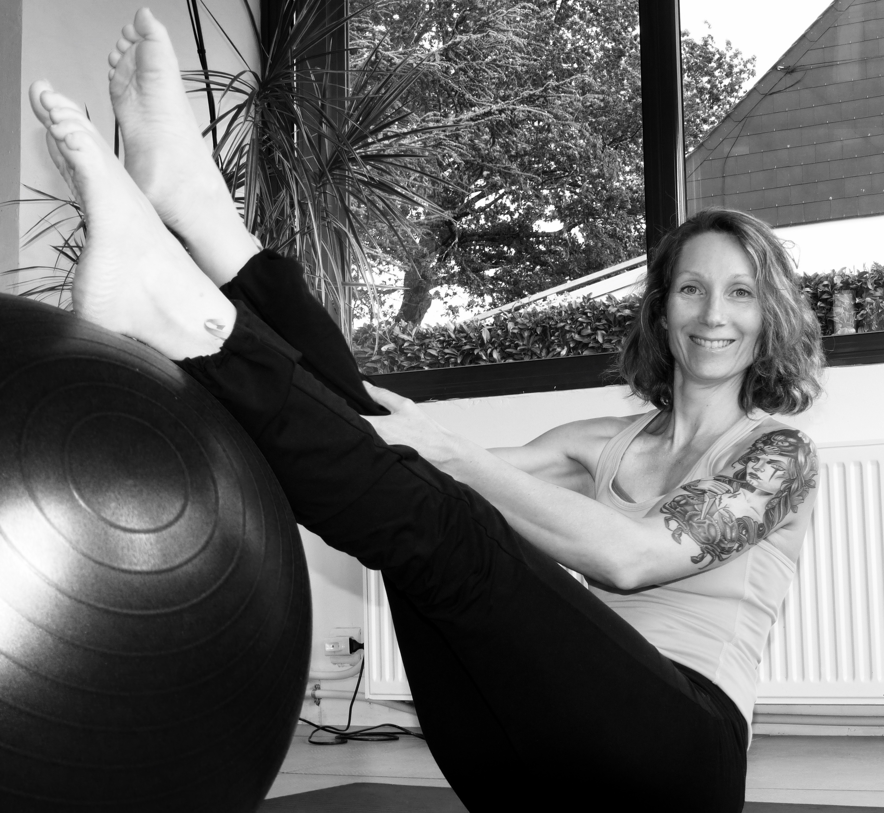

© Diet'Gym 2014/2021
EIRL Mathieu Dorothée
SIRET 801 530 502 00013
EIRL Mathieu Dorothée
SIRET 801 530 502 00013

Passionnée par le fitness depuis plus de 25 ans, j’ai choisi en 2013 de compléter mon expertise en diététique tout d'abord par un certificat de qualification professionnelle en gymnastique d’entretien (renforcement musculaire, étirements, STEP, LIA, marche nordique, handisport, etc.) puis à partir de 2015 par plusieurs formations en Pilates (Instructeur MatWork 1 & 2, Femmes enceintes/Seniors, Petits materiels).
Ces diplômes me permettent de fournir un suivi personnalisé complet axé sur une formule évidente : règles simples d’alimentation et activité sportive adaptée. La plupart d’entres nous n’ont pas besoin de régimes contraignants. En plus d’être parfois traumatisant, ils sont rarement efficaces dans la durée (phénomène de yoyo). Je vous propose de vous sensibiliser à des règles simples et à quelques exercices qui vous permettront d’être bien en forme !
Au niveau sportif, mes séances s'appuient sur des techniques de gym posturale et profonde (Pilates) en prenant en compte les recommandations d'organismes tels que l'ANSES ou l'OMS. Ces séances sont également construites en tenant compte des méthodes proposées par le Dr. Bernadette de Gasquet ou encore de la danseuse/kinésiterapeute Blandine Calais-Germain.
En parallèle de mon activité de conseils personnalisés, vous pouvez me trouver dans les milieux associatifs où j'interviens régulierement (voir mes liens) ainsi que dans des formations sport-santé que je délivre (hygiène de vie, diététique/sommeil, sport/santé).